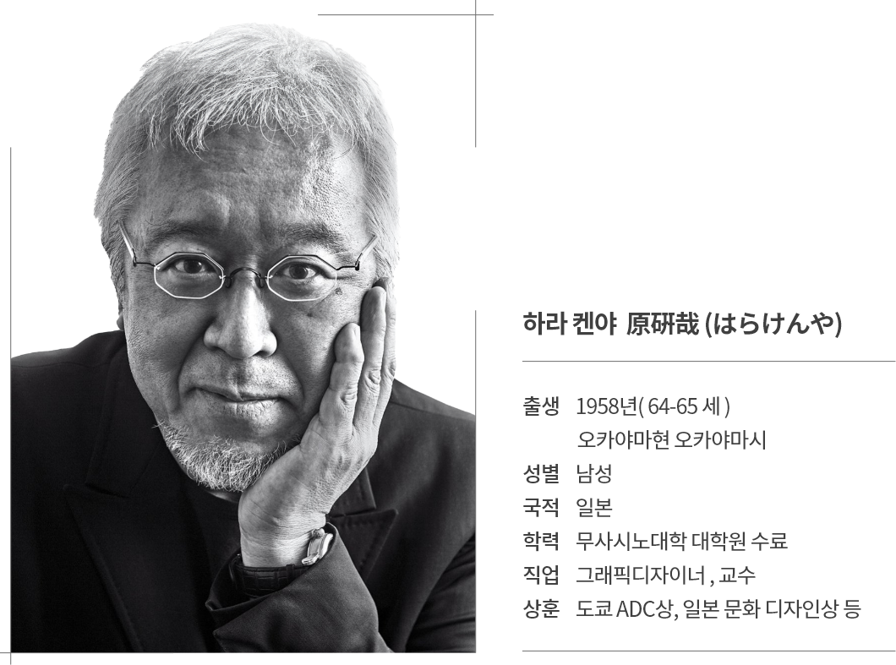

그래픽 디자이너, 일본디자인센터 대표. 무사시노미술대학 교수로 활동하고 있다. 디자인 영역에 폭넓은 관점으로 접근하여, 여러 분야를 넘나드는 다양한 커뮤니케이션 프로젝트에 참여하였다. 나가노 동계 올림픽 개·폐회식 프로그램과 2005년 아이치 박람회 프로모션에서 일본 전통문화에 깊게 뿌리를 둔 디자인을 선보였다.
또한 상품 디자인 분야에서는 니카 위스키, AGF를 비롯해 일본 각지의 술과 쌀 등의 홍보와 관련된 디자인 작업을 진행하고 있다. 또한 마츠야 긴자 백화점 리뉴얼 계획에서 공간과 그래픽을 가로지르는 복합적인 디자인 디렉션을 맡았으며, 우메다 병원 사인 계획에서는 촉각을 강조하는 새로운 커뮤니케이션의 가능성을 보여 주었다.
그 외에도, 〈건축가들의 마카로니〉, 〈리디자인 ― 일상의 21세기〉 등의 전시를 통해 기획자로서 일상에 대한 시점을 보이기도 하였다. 〈리디자인〉전은 세계 여러 도시에서 순회 전시하였으며, 이 전시의 의미를 인정받아 2000년에 세계산업디자인비엔날레 제품·그래픽 부문 대상과 마이니치 디자인상을 수상하였다. 2001년부터 무인양품의 자문 위원이 되었고 무인양품 광고 캠페인으로 2003년 도쿄아트디렉터스클럽 대상을 수상하였다. 북 디자인 분야에서 고단샤 출판문화상, 하라히로무상, 카메쿠라유사쿠상, 그 외의 다양한 디자인 활동으로 일본문화디자인상을 수상하는 등 일본 국내외에서 수많은 상을 수상하였다. 'HAPTIC' 'SENSEWARE' 등 상징적 키워드를 내세운 전람회를 제작하여 디자인에 대하여 세상에 질문을 던지고 있다.